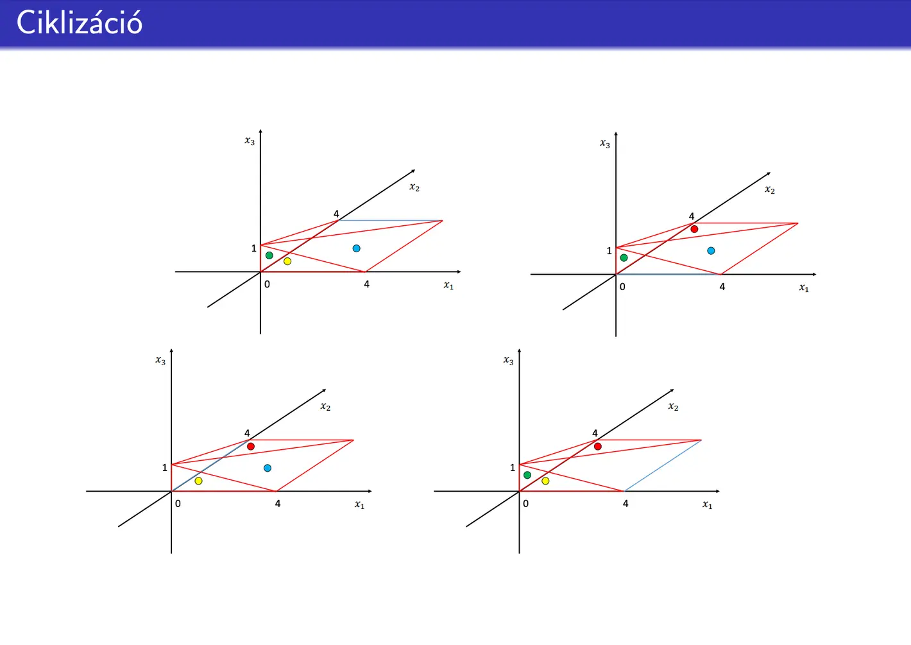
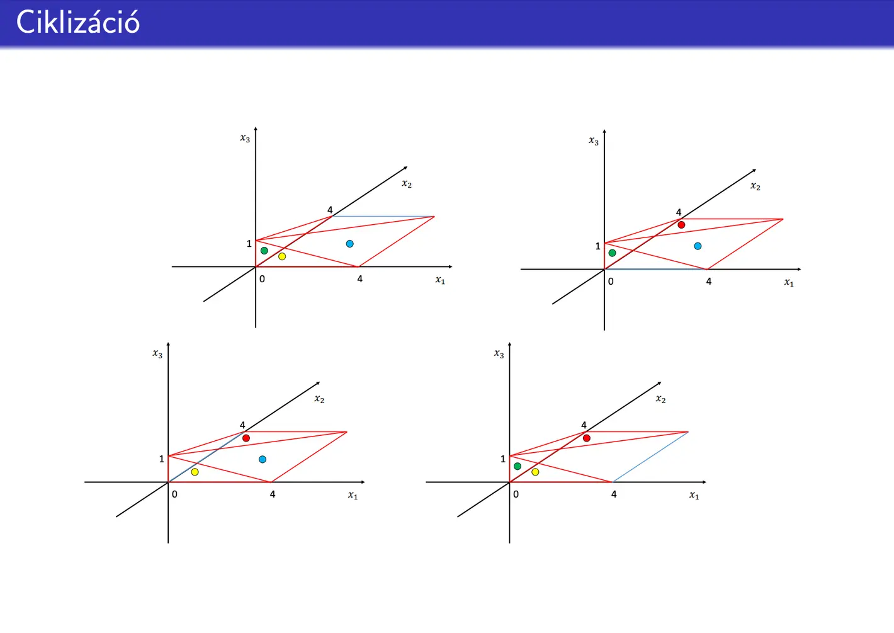

Lineáris programozás alapfeladata
További részletek
Youtube videó a témáról
Youtube videó a témáról
Youtube videó a témáról

Definíció: Az LP egy optimalizálási probléma, ahol egy lineáris célfüggvény szélsőértékét keressük lineáris feltételek mellett.
Standard alak:
- Célfüggvény: Max c1x1 + c2x2 + ... + cnxn = z
- Feltételek: Lineáris egyenlőtlenségek rendszere
- Változók: x1, ..., xn ≥ 0
Kulcsfogalmak:
- Lehetséges megoldás: Feltételeket kielégítő vektor
- Optimális megoldás: Olyan lehetséges megoldás, ahol a célfüggvény felveszi maximumát/minimumát.
Példa - termék mix feladat
További részletek

- Lehetséges megoldás: x(20,20) - 20 katona, 20 vonat
- Optimális megoldás: x* = (20,60) - 20 katona, 60 vonat
- Optimum értéke: z* = 180 ($180 profit)
Szimplex algoritmus és szótár alak
További részletek
Szótár alak: Az LP feladat átalakított formája, ahol az újonnan felvett változókat kifejezzük.
Példa szótár alakra:

Magyarázat:
- Bázisváltozók: A szótár alakú feladat bal oldalán szereplő változók. Értékük az egyenletek jobb oldalán álló konstans.
- Nembázis változók: A szótár alakú feladat jobb oldalán álló változók. Értékük 0!
Szimplex algoritmus: Iteratív módszer az LP feladat optimális megoldásának megtalálására.
Algoritmus lépései:
- Input: A szótár alakú feladat.
- Pivot lépések: Amíg van pozitív együtthatójú célfüggvény változónk:
- Generáló elem választása:
- Oszlop választás: Pozitív célfüggvény együttható közül a legnagyobb. Ha több azonos, a kisebb indexűt.
- Sor választás: Hányados szabály alapján. Ha van negatív együtthatójú változó, vége az algoritmusnak.
- Belépő változó kifejezése és behelyettesítése
- Generáló elem választása:
- Output: Megoldás (nincs megoldás / nem korlátos a feladat / az optimum értéke).
Fontos fogalmak:
- Belépőváltozó: Az a nem bázis változó, ami a következő szótárban már bázisváltozó.
- Kilépőváltozó: Az a bázisváltozó, ami a következő szótárban már nem bázis változó.
- Pivot szabály: Szabály, amely meghatározza a belépő- és kilépőváltozókat.
- Degenerált iterációs lépés: Olyan szimplex iteráció, amelyben nem változik a bázismegoldás.
- Ciklizáció: Ha egy korábbi iteráció szótárát kapjuk vissza.


 
